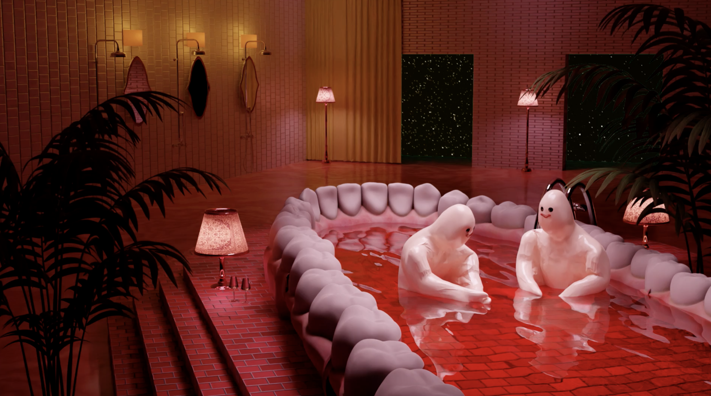
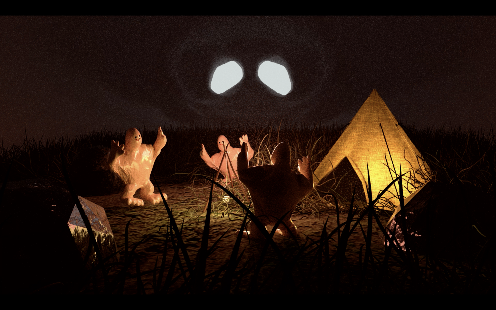
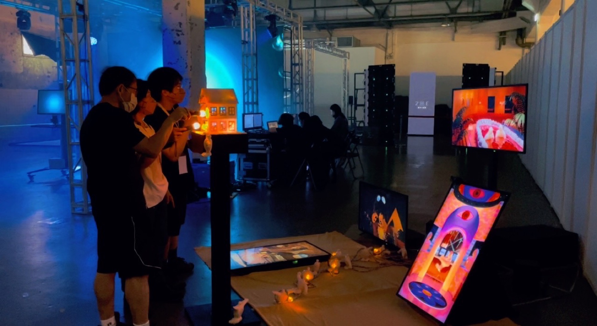
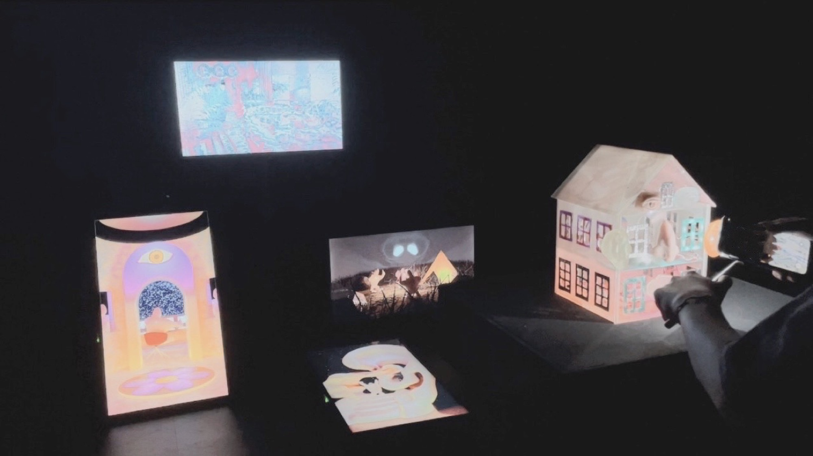

08 — 2022 — Video interactive installation
Naked House
感官全裸
以五官為房間的模型屋，由感測器觸發影像。A model house in which each room represents a sense, with sensor-triggered video.
- Medium
- Blender, Max/MSP, Arduino, cast objects, Ableton Live · 230 × 190 × 160 cm
- Team
- Four members
- Role
- Max + Arduino integration, Blender character design
- Shown
- 2022 Endless Migration, BFA graduation exhibition, Huashan 1914 Creative Park East 2D, Taipei
01
頭部是感官匯集之處，眼、耳、鼻、口共同構成一套情緒系統。《感官全裸》將「家」的概念延伸至五官，使每個器官在模型屋中各自擁有一個房間。
The head is where the senses converge; eyes, ears, nose and mouth form a single emotional system. Naked House extends the idea of home to the face, giving each organ its own room in a model house.
02
屋體上的感測器觸發以 Blender 製作的室內動畫，觀眾靠近窗口時，房內播放的內容隨之改變。
Sensors on the house trigger interior animations made in Blender; as a viewer approaches a window, the content inside changes.



- Integration
- Max/MSP ↔ Arduino sensor logic and video switching
- 3D
- Character design and animation in Blender
- Team
- 4 members, BFA New Media Art, TNUA
- Venue
- Huashan 1914 Creative Park, Taipei